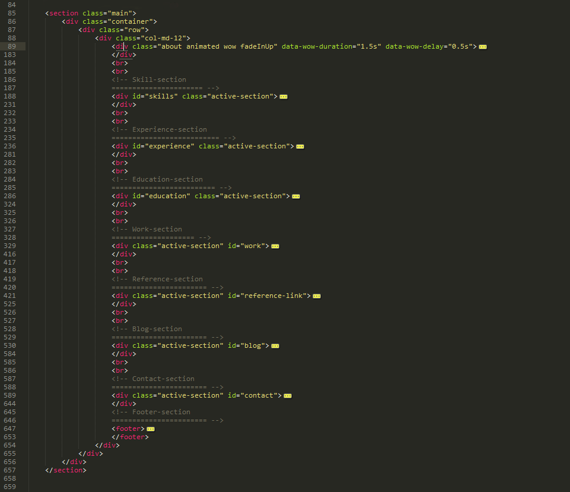
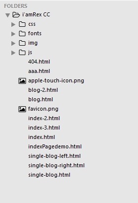
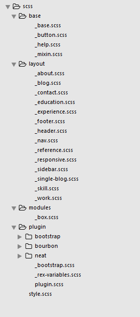

Thank you for purchasing our theme. If you have any questions that are beyond the scope of this help file, please feel free to email via our user page contact form here. Thanks so much!
This theme is built with the most populer Twitter Bootstrap Grid. It's HTML Structure is easy to edit and customize as you need.



This theme imports three Javascript files.
I’amRex has 3 diffrent Button Style and a special class name associated with each of them.
.rex-primary-btn
.rex-primary-btn-effect
.rex-btn-background-effect
.rex-primary-btn-No
.rex-primary-btn-effect-No
.rex-btn-background-effect-No
I've used the following images, icons or other files as listed.
Once again, thank you so much for purchasing this theme. As I said at the beginning, I'd be glad to help you if you have any questions relating to this theme. No guarantees, but I'll do our best to assist. If you have a more general question relating to the themes on ThemeForest, you might consider visiting the forums and asking your question in the "Item Discussion" section.
RexTheme